Course is about classical control; most prevalent, assumes linear and time invariant plant
Block Diagrams are the basis of control engineering. Each block represents a function (not like free body diagrams)
Review of Equations:
State-space models are mathematical expressions of systems
x) are the full set of variables that dictate change in a systemu
One key property of linearity is the superposition principle: the net responses caused by multiple stimuli is the sum of the responses caused by each stimuli individually
Linearization is approximating a nonlinear system, by looking at the system's behaviour near an equilibrium configuration (physical state is at rest). We then calculate the four jacobians, A, B, C and D.
Transfer functions exist only for LTI systems, and are expressed in the frequency domain. They tell us how the system responds at different frequencies (which is only possible because we assume time invarance and so the response does not depend on the current time)
Stability
For sketching bode plots, the magnitude plot is on a scale of dB, so \(20 \log|G(s)|\) for transfer function G(s). The phase plot is on a scale of degrees. The x axis is on a logarithmic scale. The sketch is called an asymptotic bode plot. We use straight line approximations to draw the plot.
Prototype first order system equation lets us compare transfer functions to a parametric form, allowing us to easily derive properties: everything depends on time constant \(\tau\)
Prototype second order system is \(G(s) = \frac{K \omega_n}{s^2 + 2 \zeta \omega_n s + \omega_n^2}\)
analyzing existing controllers
In lab 2, we looked at a second order circuit system.
Pole-zero cancellation is if some pole in either the controller C or plant P gets cancelled by the numerator
Want to look at how the poles move in the complex plane as parameters vary (in this case K, the gain of the controller)
Im(s) != 0 for poles for good step responsem poles tend towards the zeroes, but n- m branches tend towards asymptotes (to infinity since they're poles) that form the following patterns:
PID controllers are popular for their simplicity. Two classical PID controllers: error feedback and two degrees-of-freedom
following is a formula for designing a controller, based on desired poles
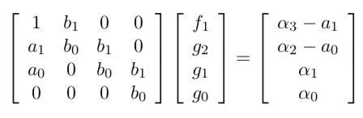
if you can adequately model your plant as a second order system, PID is effective
Cauchy's Principle of the argument: we take some contour \(\Gamma_s\) and apply some mapping (rational function). As s travels around our contour, the complex numbers G(s) can be visualized \(\Gamma_g\). by taking the angle relative to the zeroes of G, we can plot the change of phase using just \(\Gamma_g\).
K != 0, then if the feedback system is I.O. stable (every transfer function is BIBO stable) then the transferstability margin is the minimum distance from -1/K to the Nyquist Plot
a system with big margins has good transient performance, small is close to being unstable meaning its oscillatory and has slow dynamics
How to read \(K_{gm}\) and \(\phi_{pm}\) from a bode plot
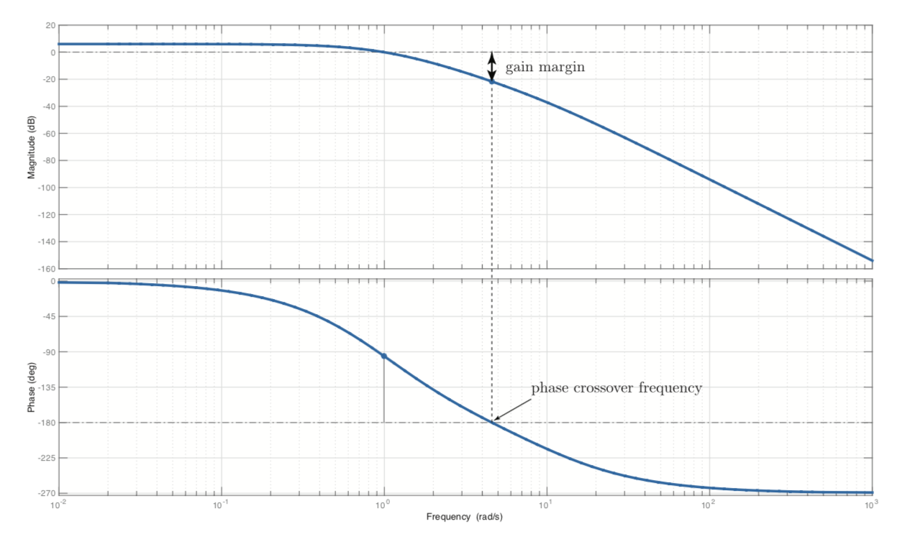
Nyqust criterion is based on the priciple of the arguments: a curve in the complex plane and a complex valued function of a complex variable


design specs in the frequency domain, sometimes by converting time domain specs
Procedure for lag controller design, either given steady state specs (tracking or disturbance rejection) or asked to increase phase margin to bbe greater than or equal to \(\phi_{pm}\) desired (from damping ratio/robustness requirements)
Lead compensation has the same controller block diagram, with \(\alpha > 1\)
// positive if too close, neg if too far
distance_adjustment = r(t) - y(t)
u(t) = -Kp * distance_adjustmentBetter algorithm, we can add another term with an integral that effectively keeps a history of choices to better influence the velocity.
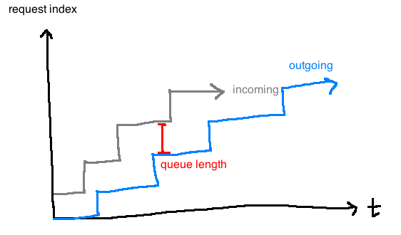
e.g. follower is \(u(t) = -K_p (r(kT)-y(kT)), \quad kT \le t \lt (k+1)T\)
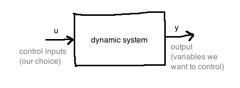
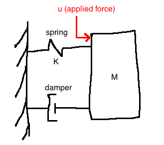
\(q \in \mathbb{R}\) is the position of the mass M
\(\dot{q} := \frac{dq}{dt}, \quad \ddot{q} := \frac{d^2q}{dt^2}\)
Assume that \(q=0\) corresponds to the mass location at which the spring is neither stretched nor compressed.
Newton's 2nd law: \(F = ma\) or \(M\ddot{q} = \sum{ \text{forces acting on } M}\)
Force due to spring: \(F_K(q) = Kq\), assumed to be linear
Force due to damper, possibly nonlinear: \(C(\dot{q})\)
Altogether, we get a second order nonlinear ODE:
\[M\ddot{q} = -Kq - C(\dot{q}) + u\]
Note: if the damper is linear (\(C(\dot{q})=bq\)), then the overall system is linear
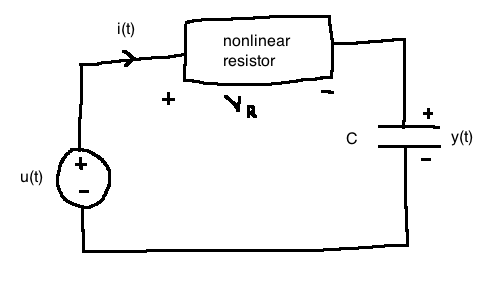
Non linear resistor just means it's a function that's non linear with respect to the current
\(V_R(t) = h(i(t)), \quad h : \mathbb{R} \rightarrow \mathbb{R}\) is possibly nonlinear
\(u(t)\): applied voltage; \(y(t)\): voltage across capacitor
Apply Kirchoff's Voltage Law, recall that it states that conservation of energy holds for voltage in a circuit:
\[\begin{align}
-u(t) + V_R + y &= 0\\
\\
i(t) &= C\frac{dy}{dt} \quad \text{(capacitor equation)}\\
V_R &= h(i(t)) = h(C\dot(y))\\
\\
-u(t) + h(C\dot{y}) + y &= 0\\
\end{align}\]
Note: if the resister were linear (\(h(i) = Ri\)), the whole system would be linear (see 2.3.4 in notes)
Observe that, no matter what you're trying to model, there are governing laws that define modelling in that domain
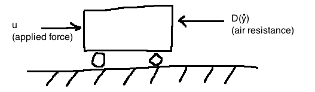
Newton's second law: \(M\ddot{y} = u - D(\dot{y})\)
We put this model into a standard form by defining two state variables:
\[x_1 := y \text{ (position)}, \quad x_2 := \dot{y} \text{ (velocity)}\]
Together, \(x_1\) and \(x_2\) make up the state of the system. We do some rewriting to have a systematic way to do linearization:
\[\begin{align} \dot{x_1} &= x_2 & \text{(state equation)}\\ \dot{x_2} &= \frac{1}{M}u - \frac{1}{M}D(x_2) & \text{(state equation)}\\ y &= x_1 & \text{(output equation)}\\ \end{align}\]
Together, these equations make up the state-space model. These equations have the general form:
\[\dot{x} = f(x,u) \text{ where } y = h(x)\]
In this example:
\[\begin{align} X &= (x_1, x_2) \in \mathbb{R}^2\\ f(x,u) &= \begin{bmatrix} x_2 \\ \frac{1}{M}u - \frac{1}{M}D(x_2) \end{bmatrix}\\ \end{align}\]
When they're non-linear we can't say much, but in the special case where air resistance is a linear function of \(x_2\) (\(D(x_2)=d x_2\)), then \(f(x,u)\) becomes a linear function of \(x\) and \(u\):
\[f(x,u) = \begin{bmatrix} 0 & 1 \\ 0 & \frac{-d}{M} \end{bmatrix} \begin{bmatrix} x_1 \\ x_2 \end{bmatrix} + \begin{bmatrix} 0 \\ \frac{1}{M} \end{bmatrix} u \]
Define \(C = \begin{bmatrix}1 & 0\end{bmatrix}\). In the linear case, we get:
\[\begin{align}
\dot{x} &= Ax + Bu\\
y &= Cx\\
\end{align}\]
This is a linear, time-invariant (LTI) model.
Expect at least one question like this on the midterm
Generalizing, an important class of systems have models of the form:
\[\begin{align} \dot{x} &= f(x, u), & f: \mathbb{R}^n \times \mathbb{R}^m \rightarrow \mathbb{R}^n\\ y &= h(x, u), & h: \mathbb{R}^n \times \mathbb{R}^m \rightarrow \mathbb{R}^p\\ \end{align}\]
The linear special case is:
\[\begin{align}
\dot{x} &= Ax + Bu, & A \in \mathbb{R}^{n \times m}\\
y &= Cx + Du, & C \in \mathbb{R}^{p \times m}\\
\end{align}\]
In this course, we look at single-input, single-output systems: \(m=p=1\).
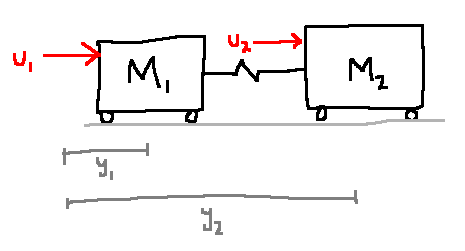
\[\begin{align} m&=2, & u &= (u_1, u_2)\\ p&=2, & y &= (y_1, y_2)\\ m&=4, & x &= (x_1, x_2, x_3, x_4) := (y_1, \dot{y_1}, y_2, \dot{y_2})\\ \end{align}\]

\[\begin{align}
u &= (y_1, u_2, u_3, u_4)= (f_1, f_2, f_3, f_4)\\
p&=3\\
y&=(y_1, y_2, y_3)\\
x &\in \mathbb{R}^{12} = (\text{position}, \text{orientation}, \text{velocity}, \text{angular velocity})\\
\end{align}\]
What is the state of a system?
The state vector \(x(t_0)\) encapsulates all of the system's dynamics up to time \(t_0\).
More formally: For any two times \(t_0 \lt t\), knowing \(x(t_0)\) and knowing \(\{u(t) : t_0 \le t \lt t_1\}\), we can compute \(x(t_1)\) and \(y(t_1)\).
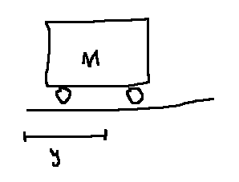
We know \(M\ddot{y} = 0\) from Newton's laws.
If we try a 1-dimensional state, say \(x := y\), then knowing \(x(t_0)\) without knowing \(\dot{y}\) is not enough information to find the position in the future, \(x(t)\) for \(t \gt t_0\). We have the same problem if we define \(x = \dot{y}\).
Since the governing equation is second order, we need two initial conditions. So, \(x=(y, \dot{y}) \in \mathbb{r}^2\) is a good choice.
In general, it is a good idea to use:
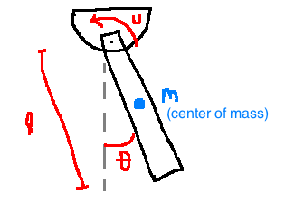
Model: \(\ddot{\theta} = \frac{3}{Ml^2} u - 3\frac{g}{l} \sin(\theta)\)
In state space form:
\[\begin{align}
x &= (\theta, \dot{\theta})\\
y &= \text{angular position} = \theta\\
\\
\dot{x}&=f(x,u) \quad & & \dot{x_1}=x_2\\
\dot{y}&=h(x,u) \quad & & \dot{x_2}=\frac{3}{Ml^2}u - 3\frac{s}{l} \sin(x_1)\\
& & & y = x_1
\end{align}\]
This is nonlinear due to the sine term.
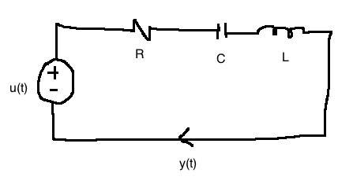
\[\begin{align} x_1 &:= \text{voltage across capacitor} = \frac{1}{C} \int_{0}^{t}{y(\tau)d\tau}\\ x_2 &:= \text{current through inductor} = y\\ \\ -u + V_R + V_C + V_L &= 0\\ \Rightarrow -u + Rx_2 + x_1 + L\dot{x_2} &= 0, \\ \\ \dot{x_1} &= \frac{1}{C}x_2(t)\\ \dot{x_2} &= \frac{-1}{L}x_1 - \frac{R}{L}x_2 + \frac{1}{L}u\\ y &= x_2\\ \\ \dot{x} &= \begin{bmatrix} 0 & \frac{1}{C}\\ \frac{-1}{2} & \frac{-R}{L}\end{bmatrix} \begin{bmatrix}x_1\\ x_2\end{bmatrix} + \begin{bmatrix}0 \\ \frac{1}{L}\end{bmatrix} u\\ \dot{x} &= \begin{bmatrix} 0 & \frac{1}{C}\\ \frac{-1}{2} & \frac{-R}{L}\end{bmatrix} \begin{bmatrix}x_1\\ x_2\end{bmatrix} + \begin{bmatrix}0 \\ \frac{1}{L}\end{bmatrix} u\\ y &= \begin{bmatrix}0 & 1\end{bmatrix}\\ \end{align}\]
recall that capacitors hold charge, that converges over time:

recall that inductors impede/release current over time:
This is the process of aproximating a nonlinear state-space model with a linear model.
Linearize \(y=x^3\) at the point \(\bar{x}=1\).
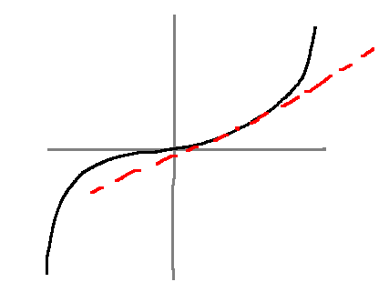
Let \(\bar{y} := f(\bar{x}) = 1^3 = 1\)
Taylor series at \(x=\bar{x}\) is:
\[y=\sum_{n=0}^\infty c_n (x-\bar{x})^n, \quad c_n = \frac{1}{n!} \frac{d^n f(x)}{dx^n} \biggr|_{x=\bar{x}}\]
\[\begin{align} f(x) &= f(\bar{x}) + \frac{df(x)}{dx}\biggr|_{x-\bar{x}} (x-\bar{x}) + \text{higher order terms}\\ \text{Keep only the terms $n=0$ and $n=1$:}\\ f(x) &\approx f(\bar{x}) + \frac{df(x)}{dx}\biggr|_{x-\bar{x}} (x-\bar{x})\\ y - \bar{y} &\approx + \frac{df(x)}{dx}\biggr|_{x-\bar{x}} (x-\bar{x})\\ \end{align}\]
If we define the derivations \(\partial y := y - \bar{y}, \partial x := x - \bar{x}\), then \(\partial y = \frac{df}{dx} \bigg|_{x=\bar{x}} \partial x\), i.e. \(\partial y = 3 \partial x\)
\[y = \begin{bmatrix}y_1 \\ y_2\end{bmatrix} = f(x) = \begin{bmatrix}x_1 x_2 - 1 \\ x_3^2 - 2x_1 x_3\end{bmatrix} =: \begin{bmatrix}f_1(x) \\ f_2(x)\end{bmatrix}\]
Linearize at \(\bar{x}=(1, -1, 2)\).
\(\bar{y}=f(\bar{x})=\begin{bmatrix}-2\\0\end{bmatrix}\)
\[d(x)=f(\bar{x})+\frac{\partial f}{\partial x} \biggr|_{x=\bar{x}} (x-\bar{x}) \text{ + higher order terms}\]
The Jacobian of \(f\) at \(\bar{x}\) is:
\[\begin{align}
\frac{\partial f}{\partial x} \biggr|_{x = \bar{x}}
&= \begin{bmatrix}
\frac{\partial f_1}{\partial x_1} & \frac{\partial f_1}{\partial x_2} & \frac{\partial f_1}{\partial x_3} \\
\frac{\partial f_2}{\partial x_1} & \frac{\partial f_2}{\partial x_2} & \frac{\partial f_2}{\partial x_3} \\
\frac{\partial f_3}{\partial x_1} & \frac{\partial f_3}{\partial x_2} & \frac{\partial f_3}{\partial x_3} \\
\end{bmatrix}\\
&= \begin{bmatrix}
x_2 & x_1 & 0 \\
-2x_3 & 0 & 2x_3-2x_1 \\
\end{bmatrix}_{x=(1, -1, 2)}\\
&= \begin{bmatrix}
-1 & 1 & 0\\
-4 & 0 & 2
\end{bmatrix}\\
&= A
\end{align}\]
i.e. \(y-\bar{y} \approx A(x-\bar{x})\)
By extension, near \((x,u)=(\bar{x}, \bar{u})\):
\[f(x, u) \approx f(\bar{x}, \bar{u})+ \frac{\partial f}{\partial x} \biggr|_{(x,u)=(\bar{x}, \bar{u})} (x-\bar{x}) + \frac{\partial f}{\partial u} \biggr|_{(x,u)=(\bar{x}, \bar{u})} (u-\bar{u})\]
Let's apply this to \(\dot{x}=f(x,u), y=h(x,u)\), a dynamic system; non-linear state space model
Definition: A constant pair \((\bar{x}, \bar{u}) \in \mathbb{R}^n \times \mathbb{R}^m\) is an equilibrium configuration of the system \(\dot{x}=f(x,u), y=h(x,u)\) if \(f(\bar{x}, \bar{u})=(0,...,0)\). The constant \(\bar{x}\) is the equilibrium point.
\[\begin{align} \dot{x} &= f(x,u)\\ y &= h(x,u)\\ x_1 &= \theta\\ x_2 &= \dot{\theta}\\ f(x,u) &= \begin{bmatrix}x_2\\ \frac{3}{Ml}u-\frac{3g}{l}\sin(x_1)\end{bmatrix}\\ h(x) &= x_1 \end{align}\]
If \(y=\pi\) (upright), then \(\bar{x_1}=\pi\). So we have to solve:
\[
\begin{bmatrix}0\\0\end{bmatrix} = \begin{bmatrix}
\bar{x_2}\\
\frac{3\bar{u}}{Ml} - \frac{3g}{l}\sin(\bar{x_1})
\end{bmatrix} \Rightarrow \bar{x_2}=0, \quad \bar{u}=0
\]
Therefore the equilibria are:
\[
\begin{bmatrix}\bar{x_1}\\\bar{x_2}\end{bmatrix} = \begin{bmatrix}\pi + 2\pi k \\ 0\end{bmatrix}, \quad \bar{u}=0
\]
Assume that \(\dot{x}=f(x,u)\) (the nonlinear state-space model) has an equilibrium configuration at \((x,u)=(\bar{x}, \bar{u})\). Forgetting about the higher order terms due to linearization,
\[ f(x,u) \approx \underbrace{f(\bar{x}, \bar{u})}_{=0} + \underbrace{\frac{\partial f}{\partial x} \biggr|_{(x,u)=(\bar{x}, \bar{u})} (x - \bar{x})}_{=: A} + \underbrace{\frac{\partial f}{\partial u} \biggr|_{(x,u)=(\bar{x}, \bar{u})} (u - \bar{u})}_{=:B}\]
Consider deviations from \((\bar{x}, \bar{u})\), where \(||\partial x||, ||\partial u||\) are assumed to be small:
\[\begin{align}
\partial x(t) &:= x(t) - \bar{x}\\
\partial u(t) &:= u(t) - \bar{u}\\
\end{align}\]
Then we get linearized state equations:
\[\dot{\partial x} = \dot{x} - 0 = f(x,u) \approx A\partial x + B \partial u\\
\dot{\partial x} = A\partial x + B\partial u\]
Linearized output equation:
\[\partial y = \underbrace{\frac{\partial h}{\partial x} \biggr|_{(x,u)=(\bar{x},\bar{u})} \partial x}_{=:C} + \underbrace{\frac{\partial h}{\partial u} \biggr|_{(x,u)=(\bar{x},\bar{u})} \partial u}_{=:D}\\ \partial y := y-\bar{y}=y-h(\bar{x},\bar{u})\]
Linearizing \(\dot{x}=f(x,u)\) and \(y=h(x,u)\):
We do this to simplify our mathematical model, by finding a good linear approximation at some point, allowing us to solve things about non-linear systems
Note that in practice, our system is still non-linear, so we need to bring it close to equilibrium configuration for our controller to be effective
u(t) -> |LTI system| -> y(t)
Transfer function of the system is the ratio \(\frac{Y(s)}{U(s)}\) where all Laplace transforms are taken with zero initial conditions
example: Recall the mass spring damper
\(M\ddot{q} = u - kq - c(\dot{q})\)
If the damper is nonlinear, then this system doesn't have a transfer function. If \(C \dot{q} = b \dot{q}\), b is a constant, then taking the Laplace transform of the differential equation:
\(\begin{align} s^2 M Q(s) &= U(s) - K Q(s) - s b Q(s) \\ \frac{Q(s)}{U(s)} &= \frac{1}{s^2 M + b s + K} \end{align}\)
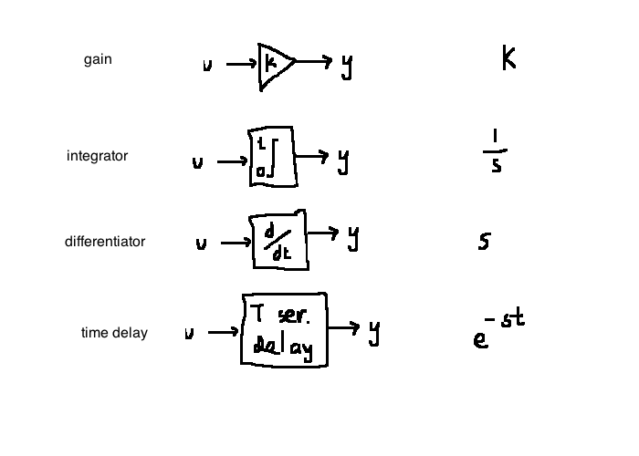
full table:
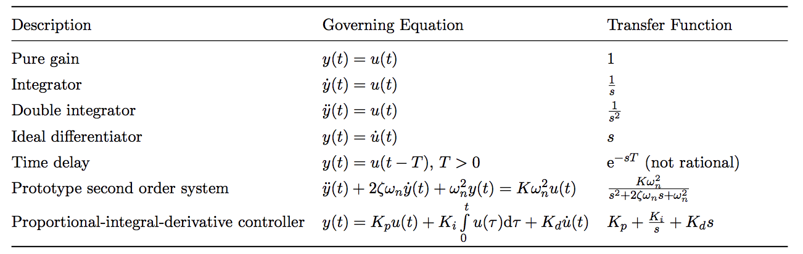
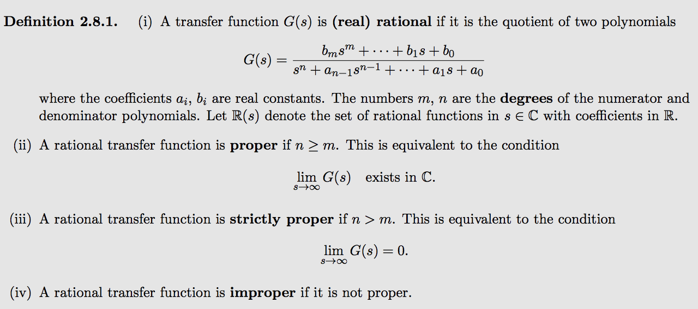
Let \(\mathbb{R}(s)\) be the set of all real rational transfer functions.
A complex number \(x \in \mathbb{C}\) is a zero of \(G(s)\) if \(\lim_{s \rightarrow x} |G(s)| = 0\).
Zeroes are roots of the numerator
The transfer function obtained from a state space model is always rational and always proper
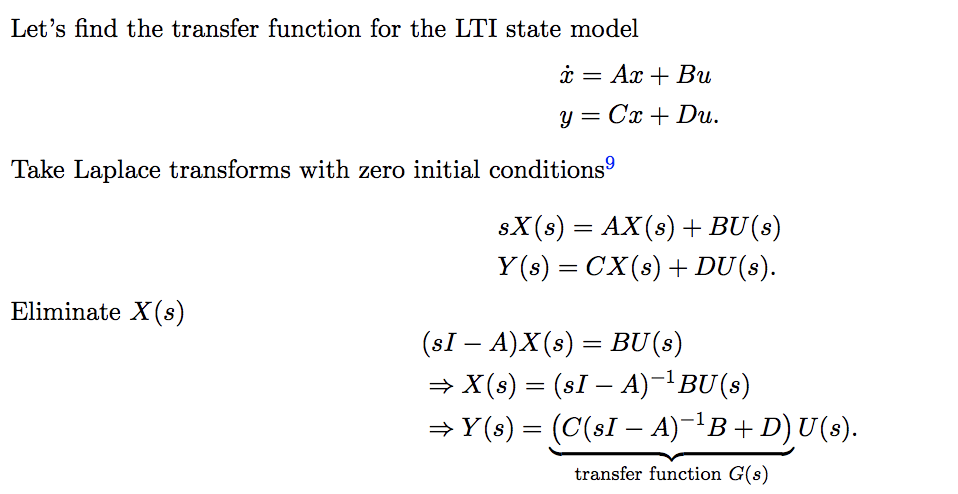
\[\begin{align} \bar{x} &= \begin{bmatrix}\pi\\0\end{bmatrix}, \quad \bar{u}=0\\ \\ \partial \dot{x} &= \begin{bmatrix} 0 & 1 \\ \frac{3g}{l} & 0 \end{bmatrix} \partial x + \begin{bmatrix}0 \\ \frac{3}{Ml^2}\end{bmatrix} \partial u\\ \partial y &= \begin{bmatrix}1 & 0\end{bmatrix} \partial x\\ \\ G(s) &= C(sI-A)^{-1}B + D, \quad (sI-A)^{-1} = \frac{\text{adj}(sI-A) \text{ <-- n x n}}{\det(sI-A) \text{ <--- polynomial}}\\ &= \begin{bmatrix}1 & 0\end{bmatrix}\begin{bmatrix}s & -1 \\ \frac{-3g}{l} & s\end{bmatrix}^{-1}\begin{bmatrix}0 \\ \frac{3}{Ml^2}\end{bmatrix}\\ &= \begin{bmatrix}1 & 0\end{bmatrix}\begin{bmatrix}s & \frac{-3g}{l} \\ 1 & s\end{bmatrix}^T\begin{bmatrix}0 \\ \frac{3}{Ml^2}\end{bmatrix}\\ &= \frac{\frac{s}{Ml^2}}{s^2 - \frac{3g}{l}}\\ \end{align}\]
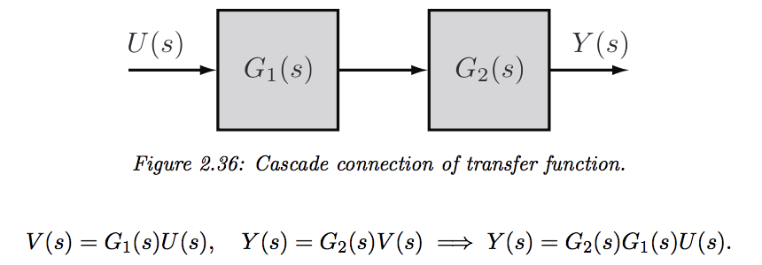
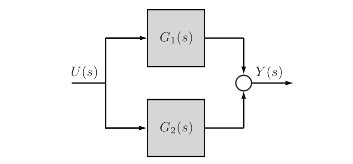
+------+
U(s) -->| G(s) |--> Y(s) Y(s) = G(s)U(s)
+------+
+------+
+->| G(s) |--+
| +------+ |
U(s) -+ +--> Y(s) Y(s) = (G(s) + H(s))U(s)
| +------+ |
+->| H(s) |--+
+------+
D(s)
|
v
+-----+
D(s) | 1/G |
| +-----+
+------+ v | +------+
U(s) -->| G(s) |--o--> Y(s) = U(s) --o-->| G(s) | Y(s) = D(s) + G(s)U(s)
+------+ +------+
+------+
U(s) --o-->| G(s) |--+--> Y(s) Y(s) = G(s)U(s)/(1 + G(s)H(s))
^- +------+ |
| |
| +------+ |
+---| H(s) |--+
+------+
We have the tools to simplify block diagrams now, simplifying series/parallel blocks and rearranging them relative to summing junctions. So some strategies we can use:
e.g.
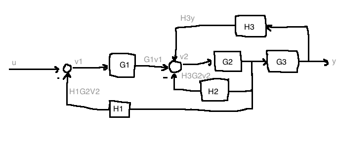
\[\begin{align} y&=G_3G_2v_2\\ v_2 &= H_2y+G_1v_1-H_2G_2v_1\\ v_1&=u-H_1G_2v_2\\ \\ \begin{bmatrix}1 & H_1 G_2 & 0 \\ -G_1 & 1+H_2G_2 & -H_3 \\ 0 & -G_3G_2 & 1\end{bmatrix} \begin{bmatrix}v_1 \\ v_2 \\ y\end{bmatrix} &= \begin{bmatrix}u \\ 0 \\ 0\end{bmatrix}\\ \\ \text{since # of equations = # of variables, we can apply}&\text{ cramer's rule } Ax = b, x_i = \frac{det(A_i)}{det(A)}\\ \text{where }A_i \text{ is the matrix formed by replacing the}&\text{ i-th column of A by the column vector b}\\ \text{By cramer's rule:}\\ Y(s) - \frac{ \det\begin{bmatrix}1 & H_1G_2 & u \\ -G_1 & 1+H_2G_2 & 0 \\ 0 & -G_2G_3 & 0\end{bmatrix} }{ \det\begin{bmatrix}1 & H_1G_2 & 0 \\ -G_1 & 1+H_2G_2 & -H_3 \\ 0 & -G_3G_2 & 1\end{bmatrix} } &= \frac{G_1 G_2 G_3}{1 + H_1 H_2 G_2 - H_3 G_3 G_2 + G_1 H_1 G_2} U(s)\\ \end{align}\]
The order of a dynamic system is the order of the highest derivative of its governing differential equation.
\[\tau \dot{y} = ku\]
or
\[\frac{Y(s)}{U(s)} = \frac{K}{\tau s + 1}\]
or
\[\begin{align}
\dot{x}&=\frac{-x}{\tau} + \frac{K}{\tau} u\\
y &= x
\end{align}\]
Observations:
Step response:
\[y(t) = \mathcal{L}^{-1}\{G(s)U(s)\} = \mathcal{L}^{-1}\left\{\frac{K}{\tau s + 1} \frac{1}{s}\right\} = \mathcal{L}^{-1}\left\{\frac{K}{s} - \frac{K}{s + \frac{1}{\tau}}\right\}\]
\[K(1-e^{\frac{-t}{\tau}}), \quad t \ge 0\]
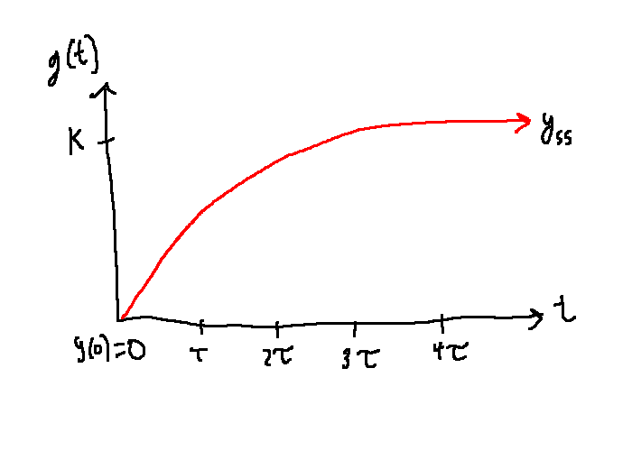
Observations:
\[\ddot{y}+2\zeta\omega_n \dot{y} + \omega_n^2 y = K\omega_n^2 u\]
or
\[ \frac{Y(s)}{U(s)} = \frac{K\omega_n^2}{s^2 + 2\zeta\omega_n s + \omega_n^2}\]
or
\[\begin{align}
\dot{x} &= \begin{bmatrix}0&1\\-\omega_n^2&-2\zeta\omega_n\end{bmatrix}x + \begin{bmatrix}0\\K\omega_n^2\end{bmatrix}u\\
y &= \begin{bmatrix} 1 & 0\end{bmatrix}x\\
\end{align}\]
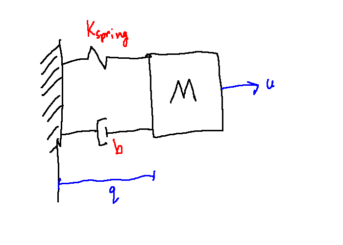
\[\begin{align} M \ddot{q} &= u - K_{spring} q - b\dot{q}\\ \frac{Y(s)}{U(s)} &= \frac{\frac{1}{M}}{s^2 + \frac{b}{M}s + \frac{K_{spring}}{M}}\\ \\ \omega_n &= \sqrt{\frac{K_{spring}}{M}}\\ \zeta &= \frac{b}{2 \sqrt{K_{spring}M}}\\ K &= \frac{1}{K_{spring}} \end{align}\]
From the quadratic formula, find the zeroes of the denominator:
\[s = -\zeta \omega_n \pm \omega_n \sqrt{\zeta^2 - 1} = \omega_n\left(-\zeta \pm \sqrt{\zeta^2 - 1}\right)\]
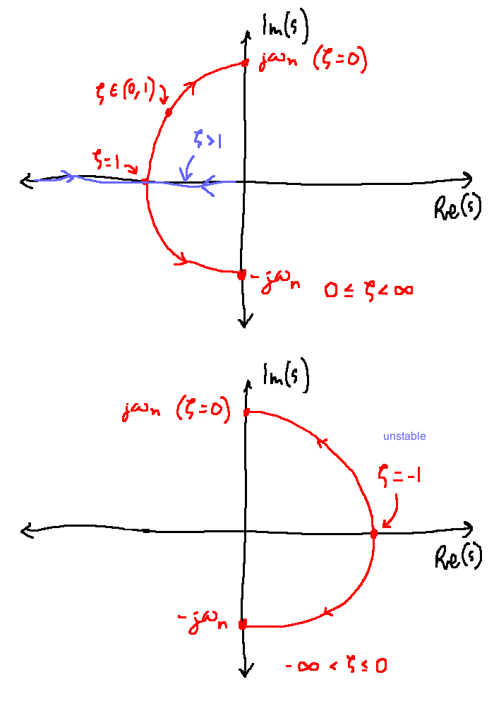
Pole locations are used to categorize the system:
Steady-state gain: \(K\)
Zeroes: none
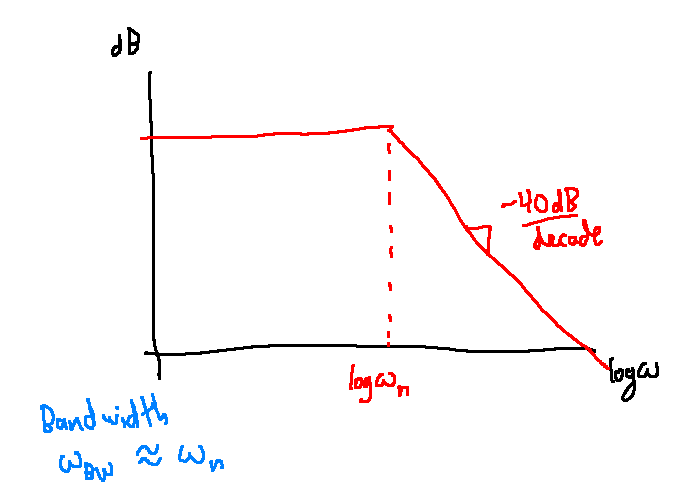
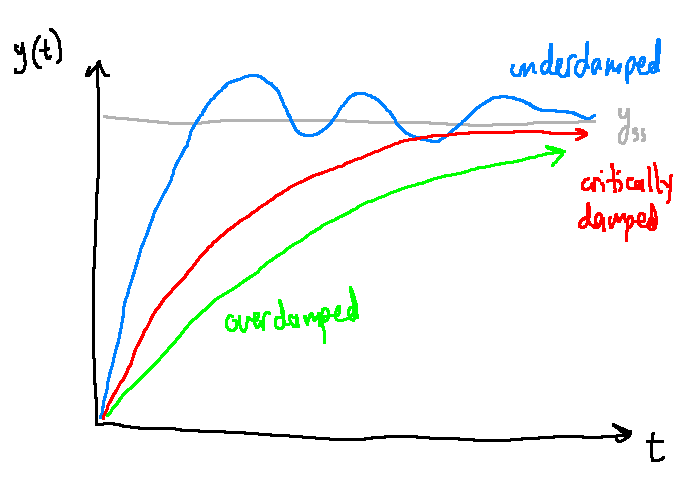
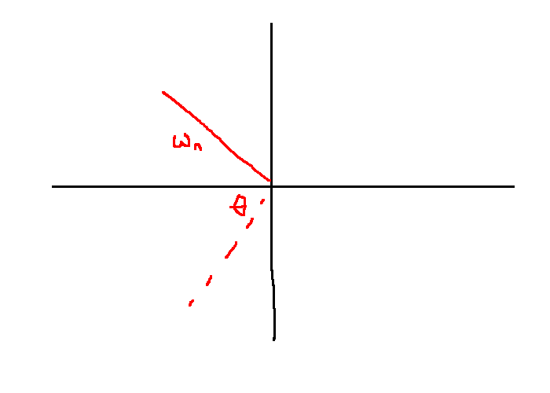
\[g(t) = K\frac{\omega_n}{\sqrt{1-\zeta^2}} \underbrace{e^{-\zeta \omega_n t}}_\text{decay rate} \sin\underbrace{\left(\omega_n \sqrt{1-\zeta^2} t\right)}_\text{oscillation rate}, \quad t \ge 0\]
Observe: If we fix \(\zeta \in (0,1)\), then larger bandwidth \(\Leftrightarrow\) faster decay
\[\begin{align} u(t) &= 1(t)\\ \Rightarrow U(s) &= \frac{1}{s}\\ \\ Y(s) &= G(s)U(s)\\ \Rightarrow y(t) &= \mathcal{L}^{-1}{G \dot U}\\ &= K\left(1 - \frac{1}{\sqrt{1 - \zeta^2}} e^{-\zeta \omega_n t} \sin\left(\omega_n \sqrt{1 - \zeta^2}t + \theta\right)\right), \quad \theta = \arccos \zeta\\ \end{align}\]
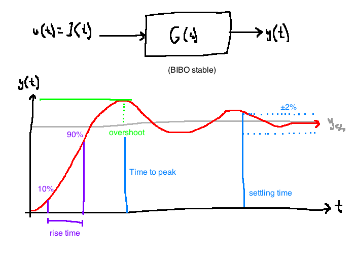
\[\frac{Y(s)}{U(s)} = \frac{\frac{1}{M}}{s^2 + \frac{b}{M}s + \frac{K_{spring}}{M}}\]
\[\begin{align} \zeta &= \frac{b}{2\sqrt{MK_{spring}}}\\ \zeta &\ge \frac{-\ln(\%OS_{max})}{\sqrt{\pi^2 + (\ln\%OS_{max})^2}} =:\zeta_{min}\\ \\ \text{To meet specs:}\\ \frac{b}{2\sqrt{MK_{spring}}} \ge 0.6901\\ \end{align}\]
The angle the poles make is \(\pm(\pi - \arccos \zeta)\).
\[ \zeta \ge \zeta_{min} \Leftrightarrow \theta \le \arccos(\zeta_{min})\]
In this example, \(\theta \le 46^{\circ}\)
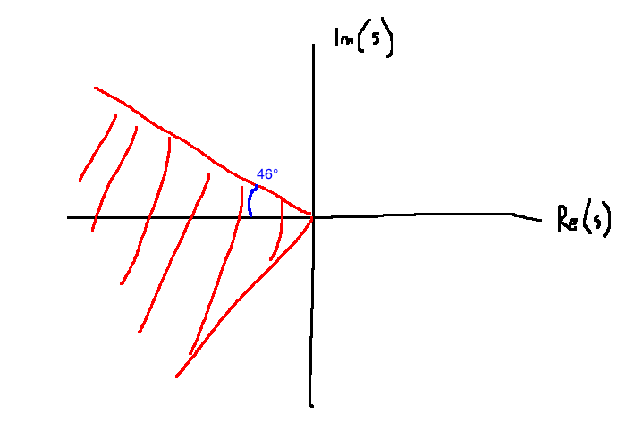
Therefore the overshoot spec is not met if there are poles in the shaded region.
Find the condition so that \(T_s \le T_s^{max} = 3\)
\[\begin{align} G(s) &= \frac{\frac{1}{M}}{s^2 + \frac{b}{M}s + \frac{K_{spring}}{M}}\\ \frac{4}{\zeta \omega_n} &\le 3 = T_s^{max}\\ \Leftrightarrow \zeta\omega_n &\ge \frac{4}{T_s^{max}}\\ \Leftrightarrow \frac{b}{2M} &\ge \frac{4}{3}\\ \end{align}\]
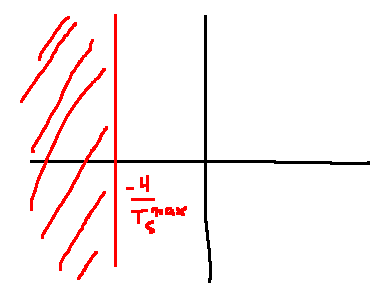
Spec: \(T_p \le T_p^{max} = 3 \text{ seconds }\)
\[\begin{align} \omega_n\sqrt{1-\zeta^2} &\le \frac{\pi}{T_p^{max}}\\ \Leftrightarrow \sqrt{\frac{K_{spring}}{M} - \frac{b^2}{4M^2}} &\le \frac{\pi}{3}\\ \end{align}\]
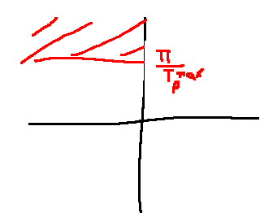
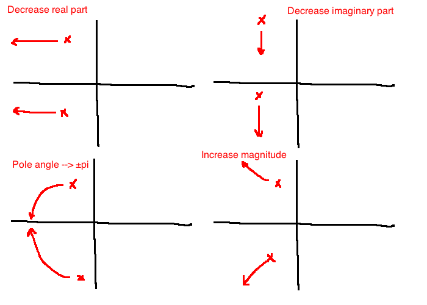
| decrease real part | increase imaginary part | angle of poles to \(\pm \pi\) | increase magnitude | |
|---|---|---|---|---|
| \(\omega_n\) | + | + | no change | + |
| \(\zeta\) | + | - | + | no change |
| %OS | - | + | - | no change |
| \(T_s\) | - | no change | - | - |
| \(T_p\) | no change | - | + | - |
\[\begin{align} \dot{x}&=Ax\\ x &\in \mathbb{R}^n\\ A &\in \mathbb{R}^{n \times n}\\ x(0) &= x_0 \in \mathbb{R}^n \text{ (initial condition) }\\ \end{align}\]
Recall:
Motivated by 1 and 2, define the matrix exponential:
\[e^A := I + A + \frac{A^2}{2!} + ...\]
\[\begin{align} A &= \begin{bmatrix}0 & 0 \\ 0 & 0\end{bmatrix}\\ \Rightarrow e^A &= I + 0 + 0 + ...\\ &= \begin{bmatrix}1 & 0 \\ 0 & 1\end{bmatrix}\\ \end{align}\]
\[\begin{align} A &= \begin{bmatrix}1 & 0 \\ 0 & 2\end{bmatrix}\\ \text{For a diagonal matrix:}\\ A^k &= \begin{bmatrix}1^k & 0 \\ 0 & 2^k\end{bmatrix}\\ \Rightarrow e^A &= I + \begin{bmatrix}1 & 0 \\ 0 & 2\end{bmatrix} + \begin{bmatrix}1^2 & 0 \\ 0 & 2^2\end{bmatrix} + ...\\ &= \begin{bmatrix}e^1 & 0 \\ 0 & e^2\end{bmatrix}\\ \end{align}\]
\[
A = \begin{bmatrix}0 & 1 & 0 \\ 0 & 0 & 1 \\ 0 & 0 & 0\end{bmatrix}\\
\]
Check that \(A^3=0\) (i.e. \(A\) is nilpotent).
\[
e^A = I + A + \frac{A^2}{2} = \begin{bmatrix}1 & 1 & \frac{1}{2} \\ 0 & 1 & 1 \\ 0 & 0 & 1\end{bmatrix}\\
\]
Replace \(A\) with \(tA\) to get a function of time:
\[e^{At} = I + tA + \frac{t^2A^2}{2!} + ...\]
Theorem: The unique solution to \(\dot{x}=Ax, \quad x(0)=x_0\) is \(x(t)=e^{tA}x_0\).
Take the Laplace transform of \(\dot{x}=Ax\) without assuming \(x(0)=0\):
\[\begin{align}
sX(s) - x(0) &= AX(s)\\
X(s) &= (sI-A)^{-1} x(0)\\
\end{align}\]
Conclusion: \(e^{At}\) and \((sI-A)^{-1}\) are Laplace transform pairs.
\[\begin{align} A &= \begin{bmatrix}0&1&0\\0&0&1\\0&0&0\end{bmatrix}\\ sI-A &= \begin{bmatrix}s&-1&0\\0&s&-1\\0&0&s\end{bmatrix}\\ (sI-A)^{-1} &= \frac{\text{adj}(sI-A)}{\det(sI-A)}\\ &= \frac{1}{s^3} \begin{bmatrix}s^2&s&1\\0&s^2&s\\0&0&s^2\end{bmatrix}\\ e^{tA} &= \mathcal{L}^{-1} \left\{ (sI-A)^{-1} \right\}\\ &= \begin{bmatrix}1&t&\frac{t^2}{2}\\0&1&t\\0&0&1\end{bmatrix}, \quad t \ge 0\\ \end{align}\]
The solution of \(\dot{x}=Ax+Bu\), \(y=Cx+Du\), \(x(0)=x_0\) is:
\[x(t) = \underbrace{e^{At}x_0}_\text{initial state response} + \underbrace{\int_0^t e^{A(t-\tau)} Bu(\tau)d\tau}_\text{forced response}\]
\[Y(t)=Cx(t)+Du(t)\]
In SISO (single-input-single-output) special case where \(x(0)=0\), we get the familiar result:
\[\begin{align}
y(t)&=(g * u)(t) = \int_0^t g(t-\tau)u(\tau)d\tau\\
g(t)&=Ce^{At}B 1(t) + D\delta(t)
\end{align}\]
Where \(1(t)\) is the unit step function and \(\delta(t)\) is the unit impulse.
The system \(\dot{x}=Ax\) is asymptotically stable if \(x(t) \rightarrow 0\) for any initial condition.
\(e^{At} \rightarrow 0\) if and only if all the eigenvalues of \(A\) have a negative real part.
\[\begin{align} M\ddot{q}&=u-Kq \quad \text{(mass-spring)}\\ x &= \begin{bmatrix}x_1\\x_2\end{bmatrix} := \begin{bmatrix}q\\\dot{q}\end{bmatrix}\\ \dot{x} &= \begin{bmatrix}0&1\\\frac{-k}{M}&0\end{bmatrix}x + \begin{bmatrix}0\\\frac{1}{M}\end{bmatrix}u\\ \\ \text{Using } M=1, k=4:\\ e^{At} &= \begin{bmatrix}\cos 2t&\frac{1}{2}\sin 2t\\-2\sin 2t & \cos 2t\end{bmatrix}\\ \end{align}\]
Since \(e^{At}\) does not approach 0 as \(t\) grows large, the system is not asymptotically stable.
Let's double-check this using the eigenvalues. Solve for \(s\) such that \(\det(sI-A)=0\).
\[\begin{align}
A &= \begin{bmatrix}0 & 1 \\ -4 & 0 \end{bmatrix}\\
\det \begin{bmatrix}s & -1 \\ 4 & s\end{bmatrix} &= 0\\
s^2 + 4 &= 0\\
s &= \pm 2j
\end{align}\]
The system is therefore not asymptotically stable since it has at least one eigenvalue (in this case, it has two) with a non-negative real part.
If we introduce friction:
\[\begin{align}
\ddot{q} &= u-4q-\dot{q}
\end{align}\]
Check that it is asymptotically stable (it should be)
\[ Y(s)=G(s)U(s) \quad \text{or} \quad y(t)=(g*u)(t), g(t)=\mathcal{L}^{-1}\left\{G(s)\right\}\\ \]
A signal \(u(t)\) is bounded if there exists a constant \(b\) such that, for all \(t \ge 0\), \(|u(t)| \le b\).
For example, \(\sin t\) is bounded by \(b=1\).
If \(u\) is bounded, \(||u||_\infty\) denotes the least upper bound. For example, for \(\sin t\), then \(|u(t)| \le 10\) and \(u\) is bounded.
A linear, time-independent system is BIBO stable if every bounded input produces a bounded output. \(||u||_\infty\) is finite \(\Rightarrow ||y||_\infty\) is finite.
\(G(s)=\frac{1}{s+2}\). The impulse response is \(g(t)=\mathcal{L}^{-1}\{G(s)\} = e^{-2t}\). Then:
\[\begin{align} y(t) &=(g * u)(t)\\ &= \int_0^t e^{-2\tau} u(t-\tau) d\tau\\ \forall t \ge 0:\\ |y(t)|&=\left|\int_0^t e^{-2\tau} u(t-\tau) d\tau\right|\\ &\le \int_0^t \left|e^{-2\tau} u(t-\tau) \right| d\tau\\ &\le \int_0^t e^{-2\tau} d\tau ||u||_\infty\\ &\le \int_0^\infty e^{-2\tau} d\tau ||u||_\infty\\ &= \frac{1}{2} ||u||_\infty\\ \\ ||y||_\infty &\le \frac{1}{2} ||u||_\infty\\ \therefore \text{ system is BIBO stable. } \end{align}\]
Theorem 3.5.4: Assume that \(G(s)\) is rational and strictly proper. Then the following are equivalent:
For example, \(\frac{1}{s+1}, \frac{1}{(s+3)^2}, \frac{s-1}{s^2+5s+6}\) are all BIBO stable because their poles have a negative real part.
On the other hand, take \(\frac{1}{s}, \frac{1}{s-1}\). These are all BIBO unstable because they have poles which do not have a negative real part. The function \(\frac{1}{s}\) is an integrator, so when you give it a constant function as an input, the output will be a ramp, which is unbounded.
Theorem 3.5.5: If \(G(s)\) is rational and improper (the degree of the numerator is greater than the degree of the denominator), then \(G\) is not BIBO stable.
\[\begin{align}
\dot{x} &= Ax+Bu\\
y *= Cx+Du\\
\Rightarrow Y(s) &= \left(C(SI-A)^{-1}B + D\right)U(s)\\
&= \left(C\frac{\text{adj}(sI-A)}{\det(sI-A)}B + D\right)U(s)\\
\end{align}\]
This is BIBO stable if all poles in \(\Re(s) \lt 0\)
This is asymptotically stable if all eigenvalues of \(A \in \Re(s) \lt 0\)
Eigenvalues of \(A\) = roots of \(\det(sI-A) \supseteq\) poles of \(G(s)=C(sI-A)^{-1}B+D\)
\[\begin{align} \dot{x} &= \begin{bmatrix}0&1\\-4&0\end{bmatrix}x + \begin{bmatrix}0\\1\end{bmatrix}u\\ y &= \begin{bmatrix}1 & 0\end{bmatrix} x \end{align}\]
Eigenvalues of \(A\) are \(\pm 2j \Rightarrow\) the system is not asymptotically stable.
\[\begin{align}
\frac{Y(s)}{U(s)} &= \begin{bmatrix}1&0\end{bmatrix}\begin{bmatrix}s&1\\4&s\end{bmatrix}^{-1}\begin{bmatrix}0\\1\end{bmatrix}\\
&=\frac{1}{s^2+4}\\
&=G(s)
\end{align}\]
The system is not BIBO stable based on its poles.
In this example, \(C\text{adj}(sI-A)B=1\) and \(\det(sI-A)=s^2+4\) are coprime, so eigenvalues of \(A\) are the poles of \(G\).
Apply a constant \(b\) as input to a system. When we observe the output, the steady-state gain of a transfer function \(G(s)\) is \(\frac{Y_{ss}}{b}\).
Final Value Theorem (3.6.1): Given \(F(s)=\mathcal{L}\{f(t)\}\), where \(F(s)\) is rational:
For example: \(F(s) = \frac{1}{s^2}, sF(s) = \frac{1}{s}\). \(f(t)=t\), which does not converge.
e.g.:
| \(f(t)\) | \(\lim_{t \Rightarrow \infty} f(t)\) | \(F(s)\) | \(\lim_{s \rightarrow 0} sF(s)\) | FVT case |
|---|---|---|---|---|
| \(e^{-t}\) | 0 | \(\frac{1}{s+1}\) | 0 | 1 or 2 |
| \(1(t)\) | 1 | \(\frac{1}{s}\) | 1 | 2 |
| \(t\) | \(\infty\) | \(\frac{1}{s^2}\) | \(\infty\) | 3 |
| \(te^{-t}\) | 0 | \(\frac{1}{(s+1)^2}\) | 0 | 1 or 2 |
| \(e^t\) | \(\infty\) | \(\frac{1}{s-1}\) | 0 | 3 |
| \(\cos{\omega t}\) | N/A | \(\frac{s}{s^2 + \omega^2}\) | 0 | 3 |
Theorem 3.6.2: If \(G(s)\) is BIBO stable and we input \(u(t)=b1(t)\), then the steady state gain \(y_{ss}=bG(0)\). This can be proven using the final value theorem.
This is sto say, steady-state gain is always \(\frac{y_{ss}}{b}=G(0)\) for any \(b\).
\(\dot{x}=-2x+u\), \(y=x\). This gives the transfer function \(Y(s)=\frac{1}{d+2}U(s)\). Given a constant reference \(r(t)=r_o 1(t)\) where \(r_0\) constant, find a control signal \(u\) to make \(y\) go to \(r\).
We want \(\lim_{t \rightarrow \infty} y(t) = r_0\).
Try open loop:
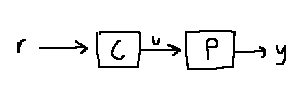
\[\begin{align} y_{ss} &= \lim_{t \rightarrow \infty} y(t)\\ &=^? \lim_{s\rightarrow 0} sC(s)R(s) \\ &= \lim_{s\rightarrow 0} C(s) \frac{1}{s+2} r_0\\ \end{align}\]
If \(C(s)\) is BIBO stable, then \(y_{ss} = \lim_{s \rightarrow 0} C_s \frac{r_0}{s+2} = C(0) \frac{1}{2} r_0\). So, \(y_{ss} = r_0 \Leftrightarrow C(0) = 2 = \frac{1}{P(0)}\).
The simplest choice is \(C(s) = \frac{1}{P(0)} = 2\), a proportional controller.
\(Y(s)=G(s)U(s)\) or \(y(t)=(g*u)(t)\). Assume \(G\) is BIBO stable, and the input signal \(u\) is a sinusoid: \(u(t) = \cos(\omega t)\). The period is \(\frac{2\pi}{\omega}\).
Theorem 3.7.1: Assuming \(G\) is rational and BIBO stable, then if \(u(t)=\cos(\omega t)\), then the steady-state output is \(y(t) = A\cos(\omega t + \phi)\). \(A=|G(j\omega)|\), and \(\phi = \angle G(j\omega)\)
\(\dot{x}=-10x+u\), \(y=x\). Then \(Y(s) = \frac{1}{s+10}U(s) =: G(s)U(s)\). If \(u(t)=2\cos(3t+ \frac{\pi}{6})\), what is the steady-state output?
\(A=|G(3j)|=\left|\frac{1}{3j+10}\right|\approx 0.1\)
\(\phi = \angle G(3j) = \angle \frac{1}{3j+10} = \angle1 - \angle(3j+10) \approx 0.2915\)
Therefore \(y(t)=0.2\cos(3t+\frac{\pi}{6}-0.2915)\).
Definition 3.7.2. If \(G(s) \in \mathbb{R}(s)\) and is BIBO stable, then:
To sketch the Bode plot of any rational transfer function, we only need to know how to sketch four terms:
Given a transfer function, we can decompose it into these terms.
\(\Re(G(j\omega))\) vs \(\Im(G(j\omega))\)
\[\begin{align} G(s) &= \frac{40s^2(s-2)}{(s+5)(s^2 + 4s+100)}\\ &= \frac{40s^2(2)\left(\frac{s}{2}-1\right)}{5(100)\left(\frac{3}{5}+1\right)\left(\frac{s^2}{10^2}+\frac{4s}{10}+j\right)}\\ &= \frac{40(2)}{5(100)} \cdot \frac{s^2(\frac{s}{2}-1)}{(\frac{s}{5}+1)(\frac{s^2}{10^2}+\frac{4s}{10^2}+1)}\\ \end{align}\]
To plot the Bode plot, we need:
\[\begin{align}
20\log|G(j\omega)|&=20\log\left|\frac{80}{500}\right| + 20\log|(j\omega)^2| + 30\log\left|\frac{j\omega}{2}-1\right|\\
&=-20\log\left|\frac{j\omega}{5}+1\right| - 20\log\left|\frac{(j\omega)^2}{10^2} + \frac{4}{10^2}j\omega + 1\right|\\
\\
\angle G(j\omega)&=\angle\frac{800}{500}+\angle(j\omega)^2 + \angle\frac{j\omega}{2}+1-\angle\frac{j\omega}{5}+1-\angle\left(\frac{(j\omega)^2}{10^2}+\frac{4}{10^2}j\omega + 1\right)\\
\end{align}\]
For \(G(j\omega)=K\):
Polar:
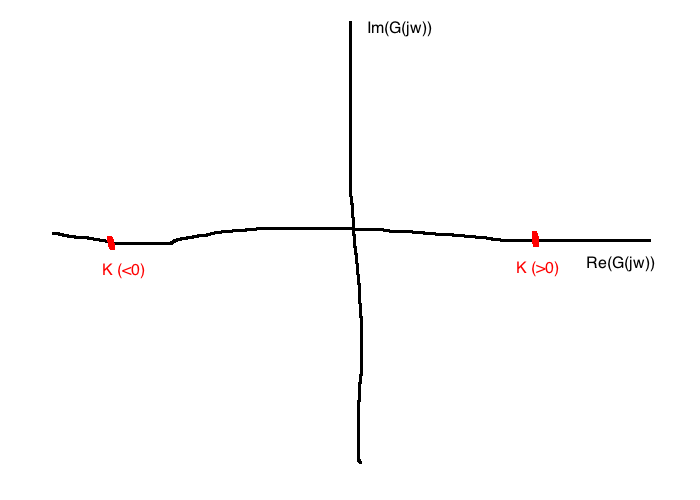
Bode:
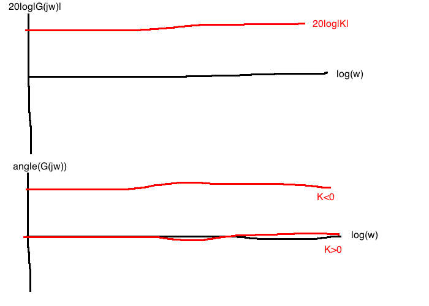
For \(G(j\omega)=j\tau \omega + 1\) (the transfer function with a zero at \(s=\frac{-1}{\tau}\))
Polar:
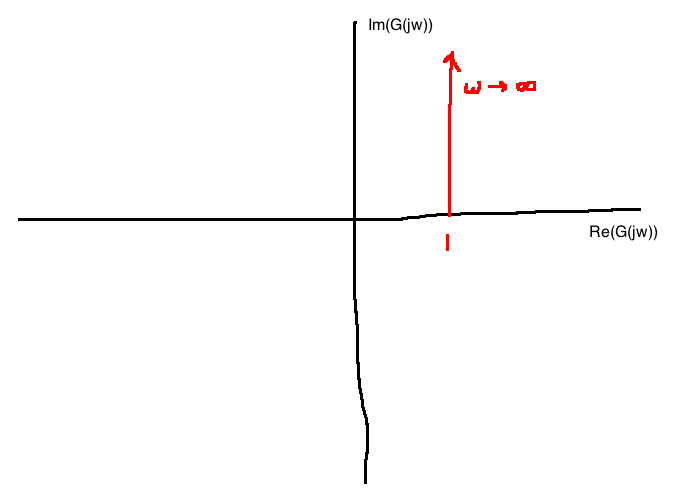
Bode:
Approximations for sketching:
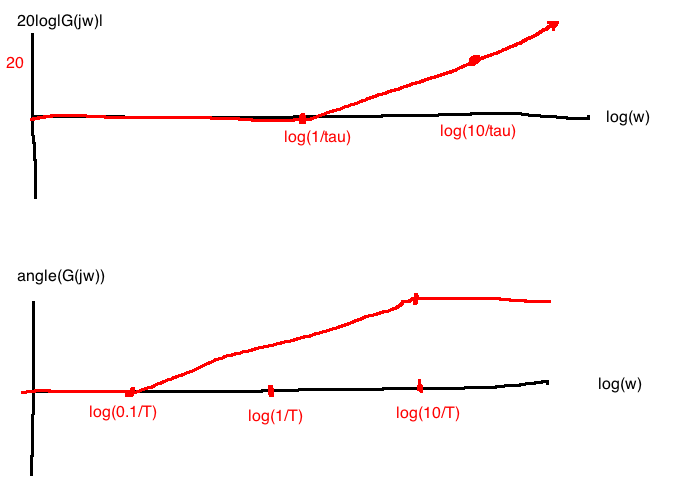
Sub-case: \(G(s) = \tau s - 1\) (zero at \(s=\frac{1}{\tau}\))
Polar plot:
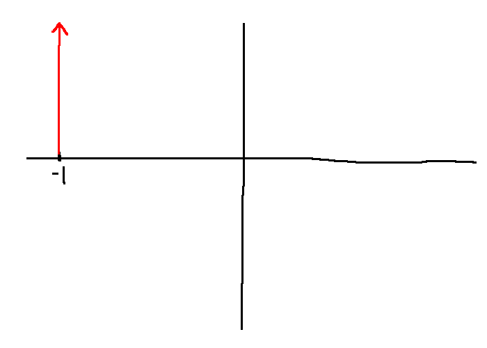
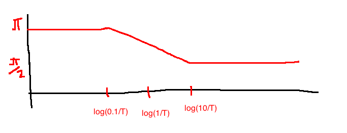
e.g. \(G(s) = \frac{100}{s+10} = \frac{100}{10} \cdot \frac{1}{\frac{s}{10}+1} = 10 \frac{1}{\frac{s}{10}+1}\)
Frequency response: \(G(j\omega)=10\frac{1}{\frac{j\omega}{10}+1}\)
Magnitude: \(20\log|G(j\omega)|=\underbrace{20\log10}_{A}-\underbrace{20\log\left|\frac{j\omega}{10}+1\right|}_B\)
Phase: \(\angle G(j\omega) = \underbrace{\angle 10}_A - \underbrace{\angle \frac{j\omega}{10}+1}_B\)
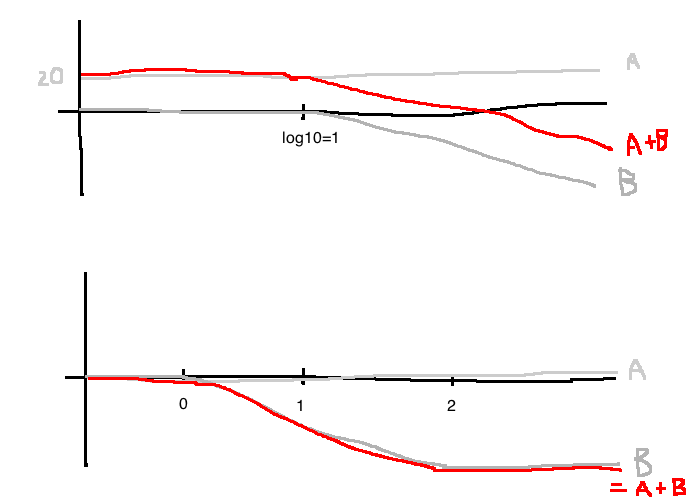
The bandwidth of the above system is the smallest frequency \(\omega_{BW}\) such that:
\[|G(j\omega_{BW})|=\frac{1}{\sqrt{2}}|G(0)|\]
In dB: \(20\log|G(0)|-20\log|G(j\omega)|=3dB\)
From the Bode plot, \(\omega_{BW}=1.0 \text{ rad/s}\)
e.g. \(G(s)=s^n\)
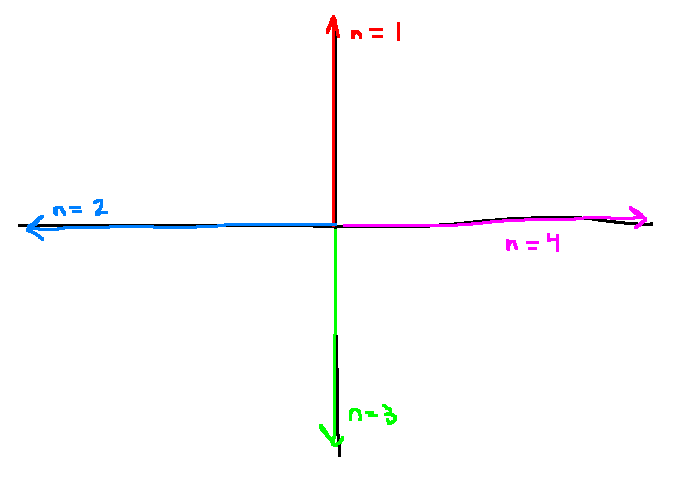
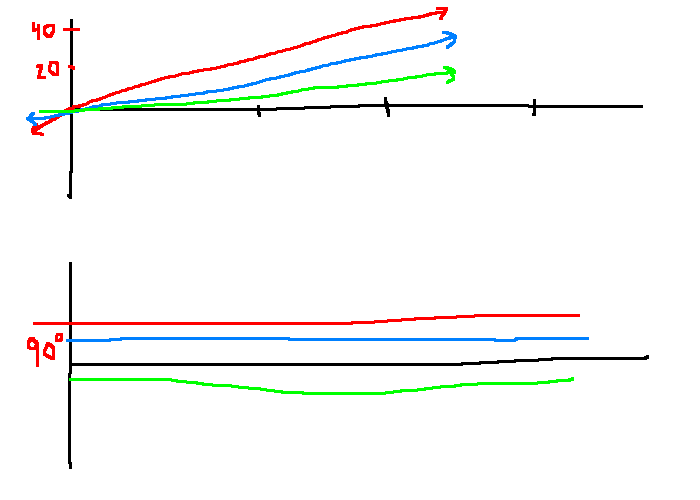
\[G(s) = \frac{s^2}{\omega_n^2}+\frac{2\zeta}{\omega_n}s + 1, \quad \zeta \in [0,1), \quad \omega_n \ne 0\]
\[G(j\omega)=\left(1-\frac{\omega^2}{\omega_n^2}\right) + j\cdot 2\zeta \frac{\omega}{\omega_n}\]
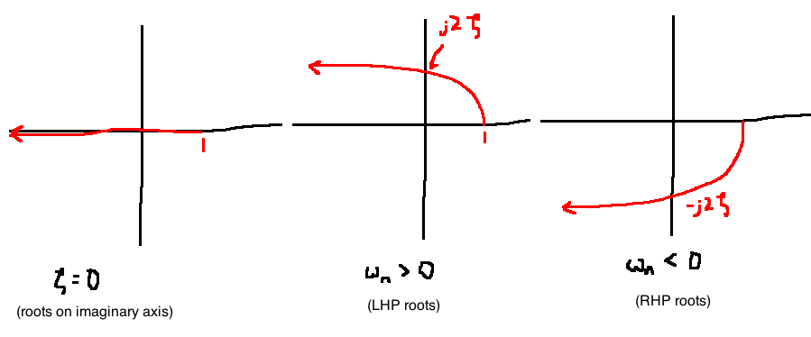
Observations:
For asymptotic Bode plots of complex conjugate roots, approximate \(G(s)\) as two first order terms with roots at \(-\omega_n\). i.e., set \(\zeta=1\):
\[\begin{align}
G(s)&=\frac{s^2}{\omega_n^2}+\frac{2\zeta s}{\omega_n} + 1\\
&\approx \frac{s^2}{\omega_n^2}+\frac{2s}{\omega_n}+1\\
&=\left(\frac{s}{\omega_n}+1\right)^2\\
&= (\tau s + 1)^2, \quad \tau = \frac{1}{\omega_n}\\
\end{align}\]
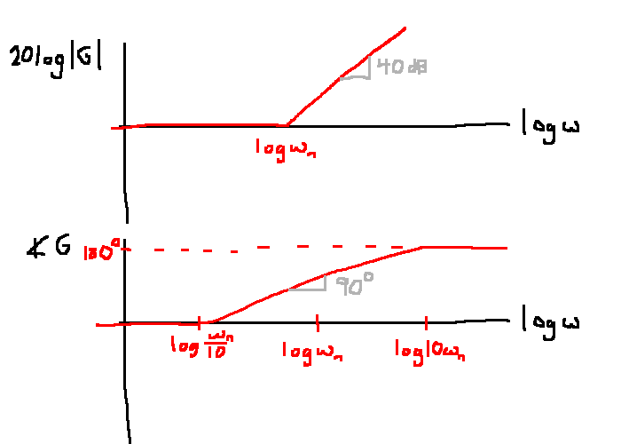
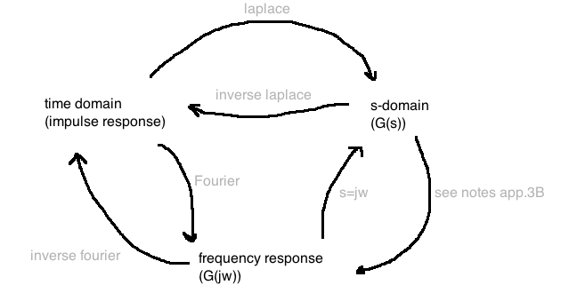
\[g(t) = Ce^{At} 1(t) + D \delta(t)\]
\[G(s) = C(sI-A)^{-1}B+D\]